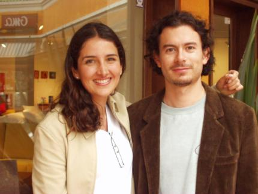

about me
 Software:
Software:
Torta
Karmack
Plata
FUmanchu!
Rants:
AboutMe
Blogging
El origen del hombre americano
Propositos2006
Propositos2007
SWFing
Pictures:
Sicilia -
thumbs
Visita Dimo 2007 -
thumbs
Tokyo -
thumbs
Barcelona -
thumbs
Lisbon -
thumbs
Gilberto Gil -
thumbs
Visita Fidel -
thumbs
Hiver -
thumbs
Dogs -
thumbs
Italy -
thumbs
Eurockeennes -
thumbs
Grenoble -
thumbs
Chipie -
thumbs
Place aux Herbes -
thumbs
Eek Friends:
 Alejo Alejo
Javier
Nelson
Old Posts:
Archive
Created with:
emacs
bash
libXSLT


 Dimo's Art
Quebec Hispano
Dimo's Art
Quebec Hispano
|
|
2003 - October |
Mi nombre es Sergio Garcia. Estudiante colombiano de doctorado informatica, empleado, usuario de transporte publico, vacacionista ocasional de Melgar. En resumen, ciudadano del comun.
Sin embargo... al llegar en la noche a mi casa, y luego de ver television con mi copine.... me convierto en mr Garcia, empleado numero 3423454-bh-45 y vocero provisional de la Evil Corporation, tenebrosa organizacion internacional con tentaculos en todos los segmentos de la economia global, desde la industria del armamento hasta el trafico de drogas, pasando por la produccion de camisetas chinas!.
Notas al margen:
- Me parecen jartisimos los blogs en los que todos y cada uno de los posts son un intento de mostrar al autor como un ser unico, cinico, sarcastico y/o sensible.
- Celebro, como siempre, un nuevo post de el maestro.
|
|


|
|
|
Para aquellos que quieren ver como actualizo mi blog, aqui esta la respuesta. En realidad normalmente uso KDE, no WindowMaker, y con una resolucion mas adecuada.
|
|
|
Steve Ballmer si sabe como motivar a los desarrolladores de software. Aqui la prueba. Richard Stallman, por supuesto, tiene sus propias tecnicas.
|
|
Esto fue lo que toco Bowie en Paris, espero que en Lyon sea parecido:
01 New Killer Star
02 Pablo Picasso
03 All The Young Dudes
04 I've Been Waiting For You
05 Fame
06 Cactus
07 China Girl
08 Hallo Spaceboy
09 Under Pressure
10 Fashion
11 Afraid
12 Days
13 Sound And Vision
14 Breaking Glass
15 Be My Wife
16 Ashes To Ashes
17 I'm Afraid Of Americans
18 "Heroes"
19 Heathen (The Rays)
|
|
|

A mis amigos Fidel y Paola les pediria que "nunca cambien", como dice
la frase de cajon, pero dado que los conosco desde que tenian algo asi
como 7 an~os, y que siguen exactamente iguales el dia de hoy, creo que
no es necesario ;)
|
|
|
Nelson se convirtio en padre hace poco! Felicitaciones! Esperamos fotos.
|
|
I never done good things
I never done bad things
I never did anything out of the blue
Want an axe to break the ice
Wanna come down right now
Para justificar mis recien comprados nombre de dominio y web hosting
decidi pasar mi blog a esta nueva maquina. Translade un par de viejos
posts, para que no se viera tan desierto. El nuevo blog, al igual que
los blogs de Alejo y Arhuaco, usa paginas
estaticas, generadas solamente cuando es necesario. Mas adelante
describire el sistema con el que administro el blog, el cual me parece
dificilmente superable en comodidad y simpleza.
|
|
 Harry Callahan: We're not just going to let you walk out of here.
Harry Callahan: We're not just going to let you walk out of here.
Crook: Who's "we", sucker?
Harry Callahan: Smith, and Wesson, and me.
Clint Eastwood se parece un poco a David Bowie.
|
|
 Preparandome para asistir al concierto de David Bowie el 15 de noviembre en Lyon, tome prestado de la cooperativa el disco Heathen. Como no puedo escribir una critica ni la mitad de sofisticada de las de HateMachine, solo dire que el disco me parece bueno.
Por otra parte, parece que el comportamiento de blogspot que estaba haciendo que tanto TEL como TOL aparecieran actualizados todo el tiempo ya se acabo. Resta arreglar los thumbnails de TEL (al perder mi tabla de particiones perdi, entre otras cosas, el script). La idea de Hernando del mini Top5 es buena. Aunque me gustaria mas una imagen que un iframe.
Keep tuned
Preparandome para asistir al concierto de David Bowie el 15 de noviembre en Lyon, tome prestado de la cooperativa el disco Heathen. Como no puedo escribir una critica ni la mitad de sofisticada de las de HateMachine, solo dire que el disco me parece bueno.
Por otra parte, parece que el comportamiento de blogspot que estaba haciendo que tanto TEL como TOL aparecieran actualizados todo el tiempo ya se acabo. Resta arreglar los thumbnails de TEL (al perder mi tabla de particiones perdi, entre otras cosas, el script). La idea de Hernando del mini Top5 es buena. Aunque me gustaria mas una imagen que un iframe.
Keep tuned
|
|
|

 Save this post]
Save this post]{kind=link}